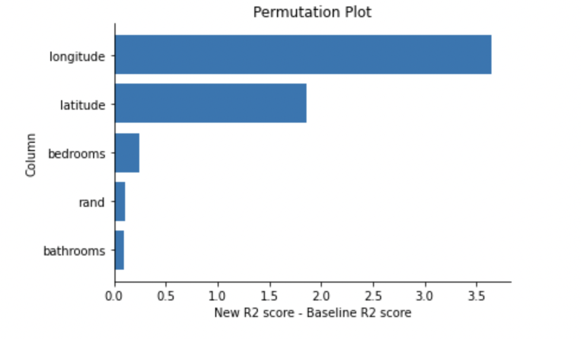

{% block blogs %}
<div class="col s12 m10 right">
    <div class="card" >
        <span class="card-title deep-orange-text fa-regular right valign-wrapper">Feature Importance</span>
        <div class="card horizontal left">
          <div class="card-image">
            
          </div>
          <div class="card-stacked">
            <div class="card-content">
                <p class="blue-grey-text fa-thin">
                    While training any machine learning model, we provide the algorithim with a bunch of features and corresponding label. Result obtained after the training holds the effect of all the features combined. However, it is not necessary that all of the features contribute equally in the prediction. Some feature might have more contribution in the prediction.
                    <br><br>Analysis of features to know, how much each feature contributes in the prediction of model is done by feture importance. Through feature importance we also achieve interpretability of the model. 
                    </p></div>
            <div class="card-action">
              <a href="../static/featimp.pdf">Show More</a>
            </div>
          </div>
        </div>
      </div>
</div>
{% endblock %}